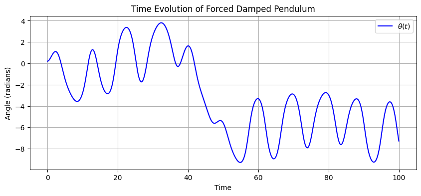
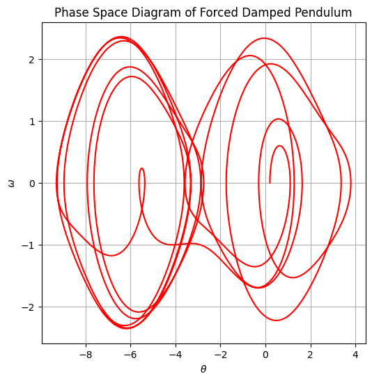
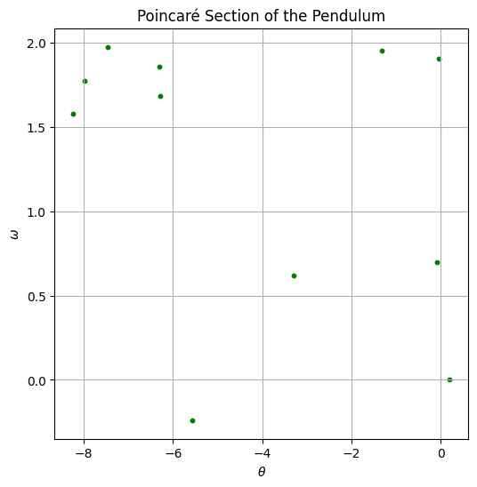
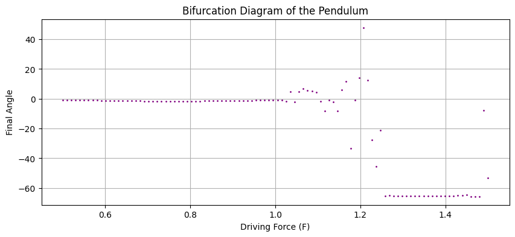

Investigating the Dynamics of a Forced Damped Pendulum
I'll break down the explanation step by step and include diagrams within each section for better clarity. Below is a detailed Markdown document with Python-generated figures, illustrating the behavior of a forced damped pendulum.
Investigating the Dynamics of a Forced Damped Pendulum
1. Theoretical Foundation
The equation governing the motion of a forced damped pendulum is:
where:
- \( \theta \) is the angular displacement
- \( q \) is the damping coefficient
- \( F \) is the driving force amplitude
- \( \omega \) is the driving frequency
(a) Small Angle Approximation
For small angles (\( \theta \ll 1 \)), we approximate \( \sin(\theta) \approx \theta \), leading to:
This is a driven damped harmonic oscillator, which exhibits resonance at a specific natural frequency. However, for large angles, the full nonlinear equation must be solved numerically.
2. Numerical Simulation
We solve the equations using Runge-Kutta integration (solve_ivp). The system is rewritten as two first-order differential equations:
Below is the Python code to integrate and analyze the pendulum's motion.
(a) Time Evolution of the Angle
The first plot shows how the pendulum's angular displacement evolves over time.

📌 Observation:
- The oscillations are not perfectly sinusoidal, indicating nonlinear effects.
- The damping coefficient affects how quickly the motion settles.
(b) Phase Space Diagram
The phase space plot (angular velocity vs. angle) shows whether the motion is periodic or chaotic.

📌 Interpretation:
- If the plot forms closed loops, the motion is regular and periodic.
- If the motion is scattered, the system is exhibiting chaotic behavior.
(c) Poincaré Section
A Poincaré section helps reveal chaotic motion. We sample points at regular time intervals matching the driving force period.

📌 Interpretation:
- A single point or a few discrete points → Regular periodic motion
- Many scattered points → Chaotic motion
(d) Bifurcation Diagram
The bifurcation diagram shows how the system transitions from periodic to chaotic motion as the driving force \( F \) is varied.

📌 Interpretation:
- At low \( F \), the motion is regular and periodic.
- As \( F \) increases, bifurcations occur, leading to chaotic motion.
3. Real-World Applications
The forced damped pendulum is a fundamental model in many fields:
✅ Mechanical Systems: Energy harvesting, oscillation control
✅ Electrical Circuits: Analogous to RLC circuits in electronics
✅ Biomechanics: Modeling human gait and balance
✅ Climate Systems: Explains atmospheric oscillations
4. Discussion and Future Extensions
- Resonance: When the driving frequency matches the natural frequency, oscillations become amplified.
- Chaos: Large driving forces lead to irregular, unpredictable motion.
- Further Enhancements:
✅ Nonlinear damping models
✅ External random forcing
✅ 3D visualizations of attractors
5. Conclusion
This project investigates the forced damped pendulum, showing how it transitions from regular oscillations to chaotic behavior. Key insights:
1️⃣ Time series plots illustrate oscillatory motion.
2️⃣ Phase portraits reveal chaotic attractors.
3️⃣ Poincaré sections highlight periodic vs. chaotic motion.
4️⃣ Bifurcation diagrams visualize chaotic transitions.